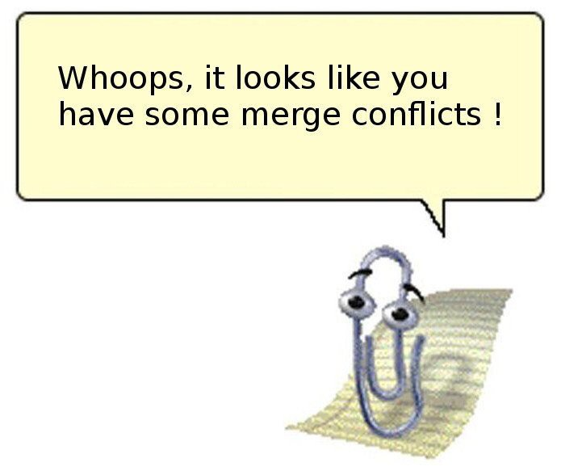
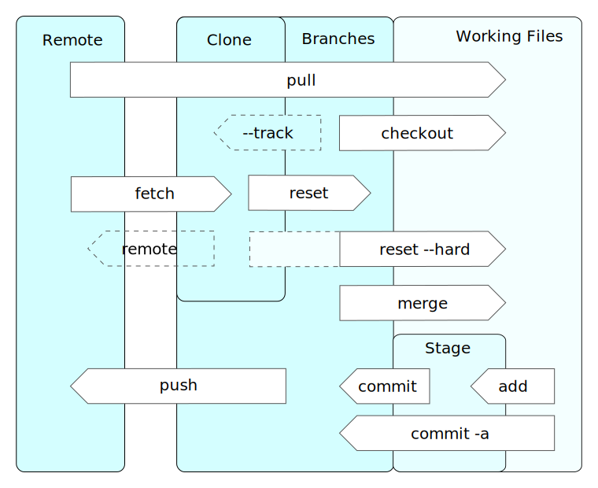
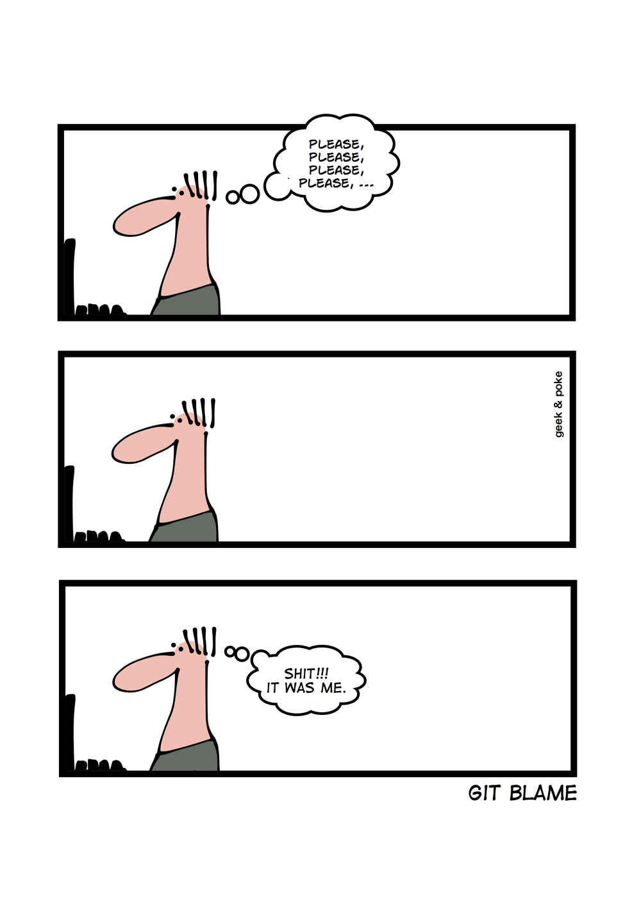

Introduction to git
1 March 2019
IHE - Delft
Raymond Nijssen, Terglobo
r.nijssen@terglobo.nlIntroduction to me
Raymond
Den Bosch
GIS Freelancer
Open source developer
Python, SQL, JS, C++, ...
Introduction to you!
Name?
Job?
Git experience so far?
Anything you'd like to add?
Time schedule
| 09:30 | Introduction |
| 10:00 | Distributed Version Control |
| 10:30 | Hands on |
| 12:30 | lunch break |
| 13:30 | Distributed Version Control |
| 14:00 | Hands on |
| 16:00 | Questions, discussions and wrap up |
| 17:00 | weekend |
git
A distributed version-control system for tracking changes in source code during software development.
It is designed for coordinating work among programmers, but it can be used to track changes in any set of files.
Its goals include speed, data integrity, and support for distributed, non-linear workflows.
Download it at git-scm.org
Version Control

Why Version Control?
Maintain multiple versions
Revert mistakes
View history
Find code differences
Know who did what
Version Control Systems
git, svn, bitkeeper, mercurial, ...
CLI - GUI
raymond@xps9370:~/git/ihe$

git init
Creates a local git repository, or turns a local directory into a git repository.
$ git init ihe Initialized empty Git repository in /home/raymond/git/ihe/.git/
git status
Shows the status of the repository
$ touch file1.txt $ git status On branch master No commits yet Untracked files: (use "git add <file>..." to include in what will be committed) file1.txt nothing added to commit but untracked files present (use "git add" to track)
git add
Puts current working files into the stage (aka index or cache).
$ git add file1.txt $ git status On branch master No commits yet Changes to be committed: (use "git rm --cached <file>..." to unstage) new file: file1.txt
git commit
Commits staged changes to a local branch.
$ git commit -m 'New file1.txt created' [master (root-commit) aac0bc8] New file1.txt created 1 file changed, 0 insertions(+), 0 deletions(-) create mode 100644 file1.txt
git log
Show ascending list of commits
$ git log commit aac0bc8722e123f720f5296b7f78bac5215c76fa (HEAD -> master) Author: Raymond Nijssen <r.nijssen@terglobo.nl> Date: Thu Feb 28 17:24:55 2019 +0100 New file1.txt created

git branch
Creates a new branch
$ git branch * master $ git branch adding_files $ git branch adding_files * master
git checkout
Switches to another branch
$ git checkout adding_files Switched to branch 'adding_files' $ git branch * adding_files master
git reset
Undo adds or commits to a certain commit back in time
$ touch file2.txt $ touch file3.txt $ git add . $ git status On branch adding_files Changes to be committed: (use "git reset HEAD <file>..." to unstage) new file: file2.txt new file: file3.txt $ git reset aac0bc $ git status On branch adding_files Untracked files: (use "git add <file>..." to include in what will be committed) file2.txt file3.txt nothing added to commit but untracked files present (use "git add" to track)
git merge
Merges files from a given branch into the current branch.
$ git add . $ git commit -m 'files 2 and 3 added' [adding_files 7b94a0b] files 2 and 3 added 2 files changed, 0 insertions(+), 0 deletions(-) create mode 100644 file2.txt create mode 100644 file3.txt $ git checkout master Switched to branch 'master' $ git merge adding_files Updating aac0bc8..7b94a0b Fast-forward file2.txt | 0 file3.txt | 0 2 files changed, 0 insertions(+), 0 deletions(-) create mode 100644 file2.txt create mode 100644 file3.txt $ ll total 12 drwxr-xr-x 3 raymond raymond 4096 feb 28 18:39 ./ drwxr-xr-x 32 raymond raymond 4096 feb 28 15:30 ../ -rw-r--r-- 1 raymond raymond 0 feb 28 17:10 file1.txt -rw-r--r-- 1 raymond raymond 0 feb 28 18:39 file2.txt -rw-r--r-- 1 raymond raymond 0 feb 28 18:39 file3.txt drwxr-xr-x 8 raymond raymond 4096 feb 28 18:39 .git/
git merge
Git cannot always automatically merge branches.
git diff
Show differences between files.
$ git diff
git help
Display help for every individual git command.
$ git help merge
GIT-MERGE(1) Git Manual GIT-MERGE(1)
NAME
git-merge - Join two or more development histories together
SYNOPSIS
git merge [-n] [--stat] [--no-commit] [--squash] [--[no-]edit]
[-s <strategy>] [-X <strategy-option>] [-S[<keyid>]]
[--[no-]allow-unrelated-histories]
[--[no-]rerere-autoupdate] [-m <msg>] [<commit>...]
git merge --abort
git merge --continue
Manual page git-merge(1) line 1 (press h for help or q to quit)
<space> for Next Page
"q" to Quit
Why Distributed?
Knowing who is doing what, where and when?
Sharing your code
Changing someone else's code
Back up
git operations
git remote
$ git remote -v
git clone
$ git clone
git pull
Retrieving commits from another branch in another repository and merging them into your current branch.
$ git pull origin master
git blame
Shows for every line of code in a file who has changed it for the last time.
$ git blame file2.txt
git blame
Online git providers
Commercial companies offer public and private git repositaries and additional services.
Extras
Good looking website
User acounts
Pull requests
Statistics
Issue trackers
Compiling and testing
Next time?
git rm
git tag
git stash
git squash
git cherry-pick
git prune
git ...
{kind=link}